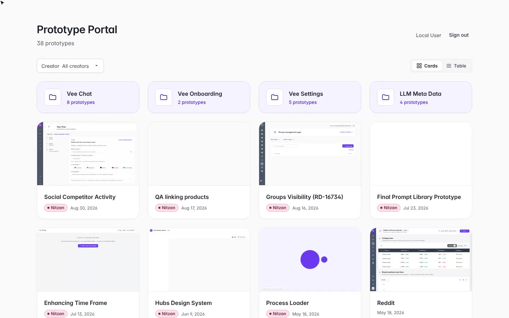
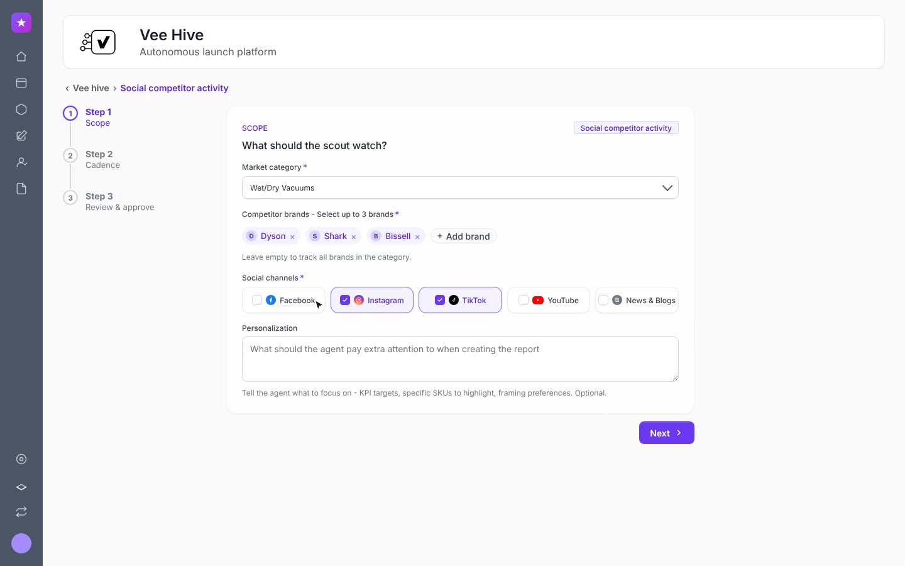
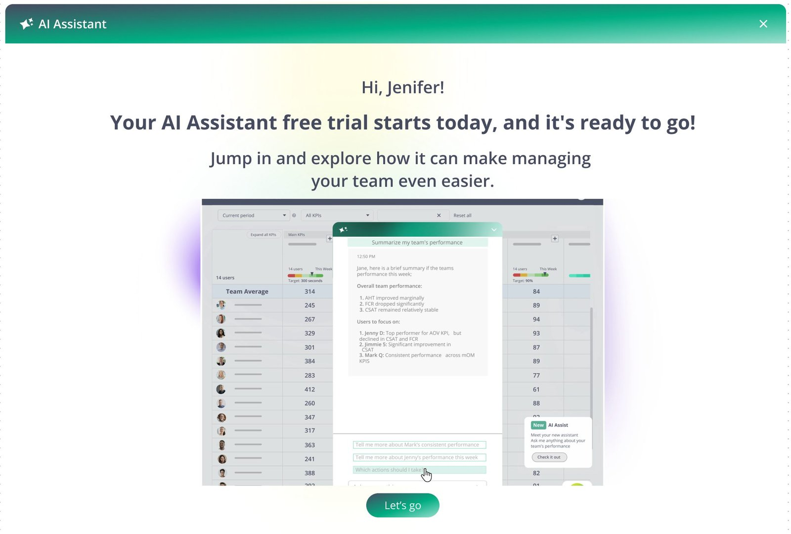

I make complex, AI-powered products feel clear.
I'm Nitzan Levy, a Lead Product Designer for AI and data-rich products. I combine product thinking, visual craft and hands-on execution, and I build the design systems and processes that help teams ship with confidence.
Selected work
04 case studies
One working prototype for research, clients and developers
A coded design system and a portal of AI-built, working prototypes, used for user research, client presentations and developer handoff. Features ship better executed, with up to 50% less development time.
Read the case study →
An AI agent that turns social noise into a competitor brief
Clients set up an agent in three steps. Every cycle, it sends a report that ends in what to do next, replacing reports users used to build by hand in slides.
Read the case study →
Designing a free trial for users who can't buy
A 30-day trial for an AI add-on, designed for two audiences: the team leaders who use it, and the admins who decide whether to pay for it.
Read the case study →
One interpretation experience, wherever the meeting happens
Four separately built surfaces, from a Microsoft Teams widget to mobile web, unified around one core pattern for live interpretation and captions.
Read the case study →By the numbers
Less development time on prototype-led features
Prototype Portal · RevuzeAlerts: from estimate to delivery
Prototype Portal · RevuzeWorking prototypes, built by one designer
Prototype Portal · RevuzeSurfaces unified into one interpretation experience
KUDOFour habits that show up in every case
Each case study follows the same structure: the challenge, my role, the thinking, the solution and the impact. Across them, the same few habits keep coming back.
- Design for everyone in the systemThe user, the buyer, the admin and the developer. A product only works when it works for all of them.
- Start with the hardest constraintSolve the smallest screen or the strictest rule first, and the pattern fits everywhere else.
- Prototype real behaviorWorking prototypes with real data put decisions in front of users, clients and developers early.
- Give AI rules, then design its outputAI is fast but only reliable inside a system. What it produces needs design as much as what goes in.